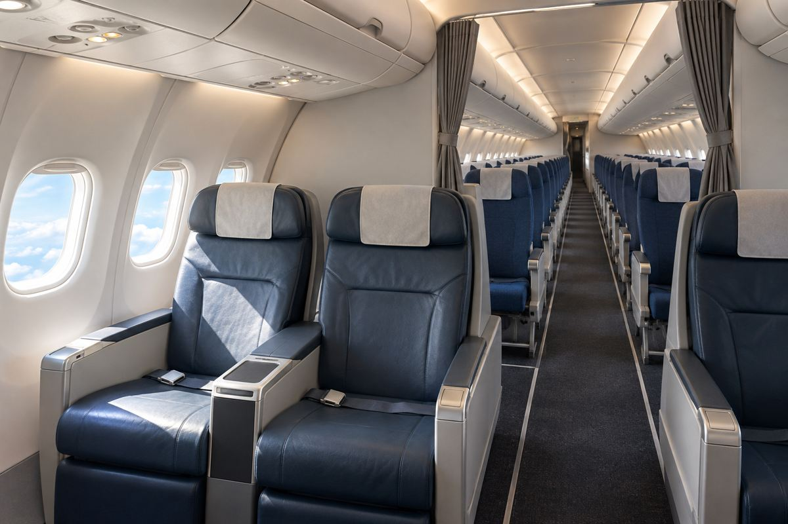

항공 / EXPLAINED
프런티어, 퍼스트 클래스 예약 시작…2027년 3월 5일 탑승 일정부터
앞 두 줄에 2대 2 좌석, 3~8열에 추가 다리 공간을 배치한다. 전원과 인터넷은 기체별로 설치한다.

미국 프런티어항공이 11월 10일 퍼스트 클래스 좌석 예약을 열었다. 새 좌석을 선택할 수 있는 탑승 일정은 2027년 3월 5일부터다. 객실 앞 두 줄은 통로 양쪽에 두 석씩 놓고, 3~8열에는 다리 공간이 넓은 프리미엄 좌석을 둔다. 회사는 좌석 설치를 시작했으며 3월 5일 완료를 예상한다고 밝혔다. 예약이 가능해진 날짜와 객실 개조의 완료 예정일은 이렇게 다르다.
프런티어는 미국 저비용항공사다. 이번 변화는 운임에 어떤 좌석과 수하물을 묶어 팔지에 직접 영향을 준다. 앞 두 줄의 퍼스트 클래스는 한쪽에 두 석만 두므로 가운데 좌석이 없다. 회사가 밝힌 최대 좌석 피치는 37인치, 약 94cm다. 뒤에 이어지는 프리미엄 열은 최대 34인치, 약 86cm다. 좌석 피치는 앞뒤 줄에서 같은 지점 사이의 거리다. 좌석 등판 두께와 모양에 따라 무릎 공간은 달라질 수 있다. 두 최대치의 차인 3인치를 그대로 무릎 앞에 더해지는 공간으로 읽으면 부정확하다.
회사 발표에서 First 묶음은 편도 129달러부터이며, 새 좌석과 위탁 수하물 두 개, 기내 반입 가방 및 우선 탑승을 포함한다. Premium 묶음은 90달러부터로, 공간이 넓은 좌석과 기내 반입 가방 및 우선 탑승이 들어간다. 두 시작가의 산술 차이인 39달러는 같은 날짜의 실제 차액을 보장하지 않는다. 수하물을 맡기는 여행자와 기내 가방만 들고 가는 여행자는 포함 항목에 매기는 가치가 다르다.
특가에는 2026년 11월 16일 미국 동부시간 밤 11시 59분까지 새로 구매하고, 2027년 3월 5일~4월 5일 중 지정 요일에 미국 국내 직항을 이용해야 한다는 조건이 붙는다. 회사 홈페이지나 앱에서 항공편을 살 때 묶음을 동시에 골라야 하며, 가격은 승객 한 명의 한 방향 기준이다. 왕복이나 여러 명의 예약이라면 가격을 단순히 한 번만 적용할 수 없다. 일정 변경이나 손님별 수하물 필요량도 같은 화면에서 비교할 항목이다.
객실 전원과 스타링크는 2027년에 설치를 시작해 기체별로 순차 적용할 계획이다. 새 퍼스트 좌석이 판매되는 날짜가 전원과 인터넷의 동시 개통일로 제시되지는 않았다. 편집부는 두 종류의 넓은 좌석에 더해 장치별 적용 속도까지 확인해야 구매 후 기대하는 서비스와 맞추기 쉽다고 본다. 특히 전원 사용이 필요한 여행이라면 항공권의 등급 이름보다 실제 편의 기내 장비 안내가 직접적인 근거다.
좌석 배치를 선택할 때는 동행 인원도 고려할 만하다. 두 좌석씩 나뉜 앞줄은 두 사람이 나란히 앉기 쉬운 구성이다. 세 명 이상이면 통로 건너편이나 앞뒤 줄에 배정될 수 있으므로 예약에서 선택 가능한 좌석을 봐야 한다. 3~8열의 프리미엄과 앞 두 줄의 퍼스트는 모두 다리 공간 확대 대상이지만 열마다 배치가 다르다. 좌석 등급 이름만으로 동행 좌석이 붙는다고 판단할 수는 없다.
판매 화면에서 확인할 수 있는 것은 예약 가능한 날짜와 그때 제시된 가격이다. 발표는 좌석 개조 일정과 첫 판매 기간을 밝혔지만, 기체별 전원·와이파이 설치 날짜와 날짜별 프로모션 잔여 좌석은 공개하지 않았다. 3월 이후 실제 이용할 사람은 배정 기체가 바뀔 때 좌석이 어떻게 처리되는지도 여행 전 확인할 수 있다.